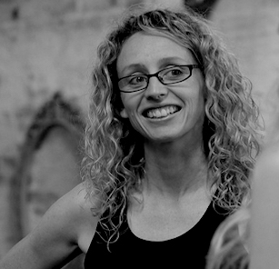
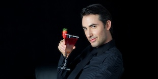
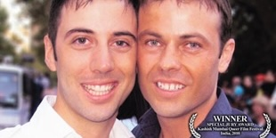
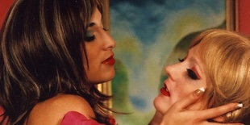
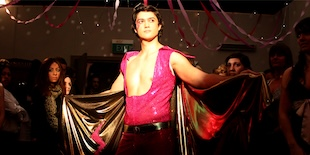
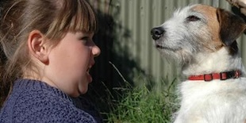
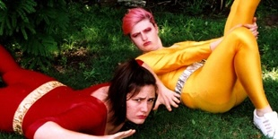

Demystify explores the mysteries of life and asks questions about the nature of reality itself.
____ 
Tonnette is a writer and director and a graduate of the Australian Film Television and Radio
School (AFTRS), the Victorian College of the Arts (VCA) and the University of Technology Sydney (UTS). Her films have won over 30 awards, both nationally & internationally, & screened at over 200 festivals worldwide, including
Oscar recognised festivals.
What if consciousness isn’t confined to the brain? What if time, space, and identity are far more fluid than we’ve been taught?
Through interviews and personal experiences we explore:
spiritual awakenings | consciousness | extraterrestrial contact | disclosure |
near‑death experiences | the afterlife | the paranormal | channeling | quantum physics | and the unexplained.
We’re here to question everything, challenge assumptions, and explore the mysteries of existence.
ABOUT THE FILMMAKER
TONNETTE (TONI) STANFORD
Her web-series, Love Bytes has over 9 million youtube views, and the follow up series, Romp, was funded by both Screen Australia and Queer Screen. Her feature documentary, Holding Hands is a multi-award winning film that is distributed by CFMDC Distribution in Canada. Her AFTRS musical short film is distributed by Ouat Media Inc.
in Canada and has been sold to Canal +France and Canal +Spain and has reached #1 on iTunes.





